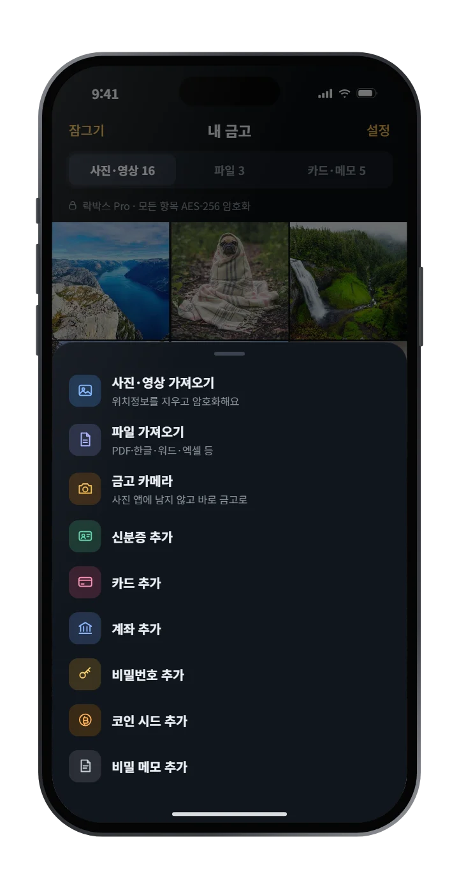

아이폰 사진 숨기기 방법 3가지 (기본 기능부터 금고 앱까지)
결론부터: 사진 앱에서 사진을 길게 누르고 가리기를 누르면 '가려진 항목' 앨범으로 옮겨집니다. 다만 이 앨범은 폰 잠금 암호로도 열리고, iCloud 사진을 쓰면 다른 기기에도 함께 동기화됩니다. 다른 사람이 내 폰을 자주 만진다면 별도 금고 앱이 더 안전합니다.
방법 1. 사진 앱의 '가리기' 기능
- 사진 앱에서 숨길 사진을 길게 누릅니다. 여러 장이면 오른쪽 위 선택을 누른 뒤 고릅니다.
- 메뉴에서 가리기를 누릅니다.
- 사진은 보관함에서 사라지고 가려진 항목 앨범으로 이동합니다.
다시 보이게 하려면 가려진 항목 앨범에서 사진을 길게 누르고 가리기 해제를 누르면 됩니다.
동영상도 같은 방법으로 숨길 수 있습니다. → 아이폰 동영상 숨기기 방법
폰 암호와 다른 비밀번호로, 만든 사람도 못 여는 금고.
락박스는 사진을 서버에 올리지 않습니다.
방법 2. '가려진 항목' 앨범 잠그기
iOS 16부터는 가려진 항목 앨범을 Face ID나 암호로 잠글 수 있습니다. 설정 방법은 아래 글에 따로 정리했습니다.
방법 3. 금고 앱에 따로 보관하기
기본 기능에는 한계가 있습니다.


- 폰 잠금 암호를 아는 사람은 가려진 항목도 열 수 있습니다.
- iCloud 사진을 쓰면 가려진 사진도 다른 기기와 동기화됩니다.
- 신분증, 계좌 메모 같은 파일은 따로 정리하기 어렵습니다.
그래서 폰 암호와 다른 별도 비밀번호로 잠기는 금고 앱을 씁니다. 금고 앱을 고를 때는 사진이 서버로 올라가는지를 꼭 확인하세요.
→ 사진 금고 앱 고르는 법: 서버 없는 앱이 안전한 이유
어떤 방법을 써야 할까?
| 상황 | 추천 |
|---|---|
| 잠깐 안 보이게만 하고 싶다 | 가리기 |
| 가족·연인이 폰을 자주 본다 | 가려진 항목 잠금 + 금고 앱 |
| 신분증·통장 사진을 보관한다 | 서버 없는 금고 앱 |
폰 암호와 다른 비밀번호로, 만든 사람도 못 여는 금고.
락박스는 사진을 서버에 올리지 않습니다.